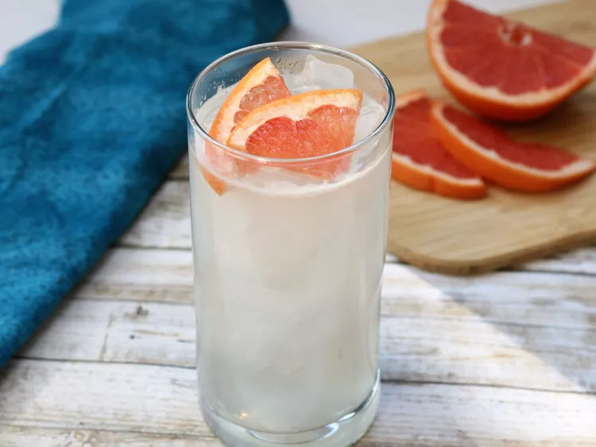

Finnish Long Drink

Description
Also known as a Lonkero, this popular Finnish highball originated at the 1952 Helsinki Summer Olympics and has
recently become popular in the U.S. It's traditionally served in a tall ("long") glass, hence the name. I find
Fresca and white grapefruit juice to give the most authentic flavor, but ruby red grapefruit juice can be used
for a sweeter, less tart flavor.
Ingredients
- 1 cup ice, or as needed
- ½ fluid ounce freshly squeezed lemon juice
- 2 fluid ounces white grapefruit juice
- 2 fluid ounces gin
- 3 ounces grapefruit flavored soda (such as Fresca®)
- 1 splash club soda, or as needed
- 1 slice grapefruit for garnish
Steps
- Fill a highball glass with ice. Add lemon juice, grapefruit juice, gin, and grapefruit soda; stir to combine.
- Top with club soda, lightly stir again, and garnish with grapefruit slice.